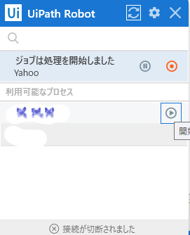

UiPath(ユーアイパス)とは
- UiPath社は、2005年、ルーマニア（ブカレスト）で創業しました。
- 当初、コンピュータビジョンとしてスタートしてから、現在は、グローバルで、全34拠点、20か国にてサービス展開を行っており、現在、本社はニューヨークにあり、シアトル、ブカレスト、バンガロール、日本を開発拠点として展開しています。
- 2017年度からのサービス開始以降、2019年度の実績において、日本国内の伸びが最も高くなっています。
- そして、日本国内での導入実績としては、 1,000社以上に及び、製造業、商社、金融、官公庁・自治体・教育、エネルギー、情報・小売・サービス・運輸と多岐に渡っています。
- UiPathは、
- UiPath Studio
- UiPath ロボット
- UiPath Orchestrator
を使った統合的RPAソフトウェアです。

UiPathの特徴
-
- システム互換性の高さ：UiPathは、Windowsに対応する能力が高い
- スケーラビリティ：UiPathは小規模から大規模までスケール可能
- サポートや無償トライアル：企業、個人問わず、自動化を促進
- 管理ツールの充実：汎用性の高い管理ツールであるOrhcestartorの運用が可能
- デスクトップ型のロボットも、サーバー型のロボットも一元管理が可能。
UiPath Studio
- 「UiPath Studio」とは実際に「RPAロボット」を開発するためのツールです。「RPAロボット」を作れるように、できる限りプログラミングの考え方を排除しています。また、「レコーディング機能」が備わっており、開発者が行った作業をそのまま自動化できる機能もあります。
UiPath Robot
- UiPathロボットとは「UiPath Studio」で開発やテストした「RPAロボット」を実行するためのツールです。
- UiPathロボットを使うことにより、「UiPath Studio」で作った「RPAロボット」をデスクトップ上から簡単に実行できます。
そのため、「UiPath Studio」を立ち上げずに、UiPathロボットさえ起動していれば、「RPAロボット」を実行できるのです。
- 直感的な操作性
- テンプレートからの作成
- ドラッグアンドドロップ操作
- レコーディング機能
- Citrixウィザードで仮想環境での自動化にも対応

UiPath Orchestrator
- 「UiPath Orchestrator」は、作ったロボットをWEB上で管理するツールです。
複数の「RPAロボット」の起動や停止をしたり、「特定の時間に自動実行する」などのように設定できます。
- Orchestratorサーバーなし構成・・・・ロボット5台前後からのスモールスタートが可能。
- Orchestratorサーバーあり構成・・・・ロボット50台を超える大規模プロジェクトにおける実績もあり、
セキュリティ、ITガバナンス管理が可能です。

UiPath Studio ソフトウェア要件
- ■サポートされるバージョン オペレーティングシステム
- Windows 7 の更新 KB 2533623 (OCR およびコンピュータービジョンのアクティビティで必須)
- Windows 7 N
- Windows 7 SP1 Update for Universal C Runtime
- Windows 8.1
- Windows 8.1 N
- Windows 10
- Windows 10 N
- Windows Server 2008 R2 の更新 KB 963697、KB 2999226、Desktop Experience 機能
- Windows Server 2012 R2
- Windows Server 2016、Windows Server 2019
- Citrix 環境 (!)- 詳細リストについては、こちらをクリックしてください。XenApp v6.5 またはそれ以降のバージョン
- XenDesktop v7.0 またはそれ以降のバージョン
- .NET Framework 最小: 4.6.1
- (!) Studio は Citrix 環境にインストールすることができますが、次の問題が発生します。
- ライセンス情報が保持されません。
- PC の名前はユーザーがログインするたびに変更されます。
- ■ハードウェア要件・最小要件・推奨要件
- CPU
- 1.4GHz 32-bit (x86)
- デュアルコア 1.8 GHz、64 ビット
- RAM
- 4 GB
注意：モニター設定：1024X768 未満の解像度はサポートされていません。
- 詳しくは公式ページをご確認ください。
https://docs.UiPath.com/studio/lang-ja/docs/software-requirements